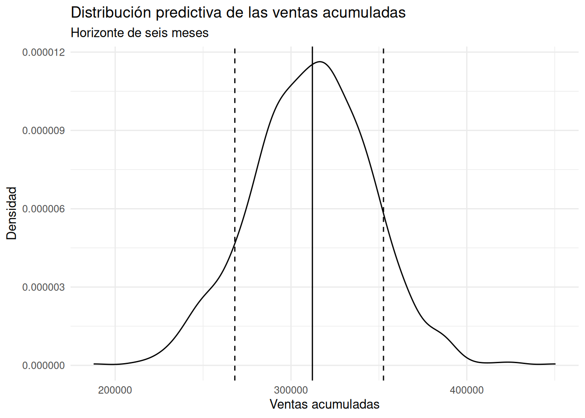

¿Qué escenarios debería considerar un gerente antes de tomar una decisión?
Retail
Forecasting
Comunicación
Cómo transformar un pronóstico bayesiano de ventas en escenarios mensuales y acumulados para apoyar decisiones de planificación bajo incertidumbre.
Author
David Villafuerte
Published
October 7, 2026
La pregunta de negocio
Un pronóstico puede producir miles de resultados posibles, pero un gerente normalmente no necesita verlos todos. Necesita convertir esa incertidumbre en información que permita planificar.
La pregunta de esta entrada es:
¿Cómo transformar un pronóstico probabilístico en métricas y escenarios que puedan utilizarse para planificar?
En la entrada anterior utilizamos los datos históricos de ventas de Superstore para construir y validar un modelo de pronóstico mensual. Ahora damos un paso adicional: utilizaremos el modelo final para generar una distribución de resultados futuros y resumirla mediante escenarios conservador, central y optimista.
La idea no es afirmar cuánto venderá exactamente la empresa. Es construir un rango de resultados plausibles que ayude a pensar en decisiones bajo incertidumbre.
1. Del dato histórico a los escenarios
Trabajaremos nuevamente con el dataset Superstore Sales. La variable Order Date contiene las fechas de los pedidos y Sales las ventas.
Primero verificamos cómo vienen realmente estas variables en el archivo antes de transformarlas.
# A tibble: 2 × 3
variable clase ejemplo
<chr> <chr> <chr>
1 Order Date character 11/8/2016
2 Sales numeric 261.96
En los datos observamos que Order Date llega como character, mientras que Sales ya es numeric. El primer registro de fecha es 11/8/2016 y el primer valor de ventas es 261.96.
Convertimos la fecha y comprobamos que la transformación no produzca valores faltantes inesperados.
fecha_prueba <-as.Date( superstore$`Order Date`,format ="%m/%d/%Y")if (anyNA(fecha_prueba)) {stop("La transformación de Order Date produjo NA inesperados. ","Revisar el formato antes de continuar." )}superstore <- superstore %>%mutate(order_date = fecha_prueba,period =as.Date(format(order_date, "%Y-%m-01") ) )validacion_fechas <-tibble(fecha_minima =min(superstore$order_date),fecha_maxima =max(superstore$order_date),periodos_mensuales =n_distinct(superstore$period))validacion_fechas # produce:
El período histórico va desde el 3 de enero de 2014 hasta el 30 de diciembre de 2017, con 48 meses distintos.
Esto nos permite trabajar con una serie mensual completa para este ejercicio.
2. Resumir las ventas con SQL
Antes de construir escenarios, necesitamos pasar de las transacciones individuales a una visión mensual.
Para ello conectamos R con una base SQLite en memoria y agrupamos las ventas por período.
con <-dbConnect(SQLite(), ":memory:")dbWriteTable( con,"superstore", superstore,overwrite =TRUE)monthly_sales <-dbGetQuery( con," SELECT period, SUM(Sales) AS monthly_sales, AVG(Sales) AS average_sale, COUNT(*) AS transactions FROM superstore GROUP BY period ORDER BY period ") %>%mutate(period =as.Date(period) )
Los primeros seis meses muestran una variabilidad considerable:
monthly_sales %>%slice_head(n =6)
Mes
Ventas mensuales
Venta promedio
Transacciones
2014-01
14,236.90
180.21
79
2014-02
4,519.89
98.26
46
2014-03
55,691.01
354.72
157
2014-04
28,295.35
209.60
135
2014-05
23,648.29
193.84
122
2014-06
34,595.13
256.26
135
No parece razonable tratar las ventas mensuales como una cantidad constante. Hay meses con ventas muy bajas y otros con valores mucho mayores.
Para el modelo necesitaremos además una variable que represente el paso del tiempo y otra que identifique el mes del año.
También podemos utilizar HAVING para identificar los meses cuyas ventas estuvieron por encima del promedio mensual histórico.
months_above_average <-dbGetQuery( con," SELECT period, monthly_sales, transactions FROM monthly_sales GROUP BY period, monthly_sales, transactions HAVING monthly_sales > ( SELECT AVG(monthly_sales) FROM monthly_sales ) ORDER BY period ")months_above_average # produce:
Esta consulta devuelve 20 de los 48 meses con ventas superiores al promedio mensual.
En este punto HAVING tiene una finalidad principalmente didáctica: muestra cómo puede utilizarse para filtrar resultados después de una agregación. En una consulta de este tipo, donde monthly_sales ya está resumida a una fila por período, el GROUP BY de las tres columnas no es estadísticamente necesario. Lo mantenemos porque el objetivo de esta colección también es mostrar cómo SQL puede integrarse de forma instrumental en un análisis realizado con R.
Ahora utilizamos CASE para crear tres categorías históricas.
Definimos:
Conservador: menos del 90 % del promedio mensual.
Central: entre 90 % y 110 % del promedio.
Optimista: más del 110 % del promedio.
monthly_scenarios <-dbGetQuery( con," SELECT period, monthly_sales, transactions, CASE WHEN monthly_sales < 0.90 * ( SELECT AVG(monthly_sales) FROM monthly_sales ) THEN 'Conservador' WHEN monthly_sales <= 1.10 * ( SELECT AVG(monthly_sales) FROM monthly_sales ) THEN 'Central' ELSE 'Optimista' END AS historical_scenario FROM monthly_sales ORDER BY period ")scenario_summary <- monthly_scenarios %>%count(historical_scenario, name ="months") %>%mutate(percentage = months /sum(months) )
El resultado histórico fue:
scenario_summary # produce:
Escenario histórico
Meses
Porcentaje
Conservador
25
52.1 %
Central
4
8.3 %
Optimista
19
39.6 %
Esta clasificación es útil para describir el pasado, pero todavía no constituye un pronóstico.
Es importante no confundir ambas cosas.
Los escenarios históricos fueron creados mediante reglas fijas sobre las ventas observadas. Los escenarios futuros que construiremos después provendrán de la distribución predictiva del modelo bayesiano.
4. Validar antes de pronosticar
Antes de utilizar todos los datos para pronosticar los seis meses siguientes, hacemos una validación temporal.
Reservamos los últimos seis meses como período de prueba y utilizamos los primeros 42 meses para entrenar el modelo.
n_test <-6n_total <-nrow(monthly_sales)if (n_total <= n_test) {stop("No hay suficientes observaciones para separar entrenamiento y prueba." )}train_data <- monthly_sales %>%slice(1:(n_total - n_test))test_data <- monthly_sales %>%slice((n_total - n_test +1):n_total)
Esta separación respeta el orden temporal: utilizamos el pasado para intentar anticipar un período posterior.
El modelo
Utilizamos un modelo normal para las ventas mensuales, incorporando una tendencia temporal y el efecto del mes del año:
El coeficiente de time_index tiene una mediana posterior de aproximadamente 472 dólares por mes. En el contexto de este modelo, esto sugiere una tendencia creciente de las ventas a medida que avanza el tiempo.
Los coeficientes mensuales se interpretan en relación con el mes de referencia, enero. Por ejemplo, la mediana posterior de month03 es aproximadamente 26,710 dólares, lo que indica que marzo presenta un nivel esperado de ventas superior al de enero, manteniendo constantes las demás variables del modelo.
El parámetro sigma, con una mediana de aproximadamente 8,490 dólares, representa la escala de variabilidad residual que permanece después de considerar la tendencia temporal y el mes del año.
No debemos interpretar ninguno de estos valores como una ley exacta del negocio. Son resúmenes de la distribución posterior del modelo.
5. ¿Qué tan bien anticipa los seis meses reservados?
Ahora generamos 1,000 predicciones posteriores para cada uno de los seis meses de prueba.
En julio, la mediana predictiva está muy cerca del valor observado. En agosto, el valor observado supera incluso el límite superior del intervalo predictivo del 90 %. En septiembre, el valor observado queda dentro del intervalo y relativamente cerca de la mediana. En octubre ocurre nuevamente una subestimación y el valor observado supera el límite superior. Noviembre también presenta un valor observado superior al límite superior. En diciembre, en cambio, el valor observado queda dentro del intervalo y por debajo de la mediana.
En conjunto, durante estos seis meses el modelo tiende a producir valores inferiores a los observados, salvo en diciembre.
Esto es una señal importante: el modelo captura parte del patrón temporal y estacional, pero no explica completamente la variabilidad observada en este período.
El MAE de 14,320 dólares indica que, en promedio, la distancia absoluta entre la mediana predictiva y las ventas observadas fue de aproximadamente 14,320 dólares durante estos seis meses.
El RMSE de 17,895 dólares es mayor porque penaliza más los errores grandes.
La cobertura observada fue de 0.50: tres de los seis valores observados quedaron dentro del intervalo predictivo del 90 %.
Este último resultado merece especial cuidado. No significa que el modelo tenga “50 % de precisión” ni que el intervalo tenga una cobertura real del 50 %. Solo tenemos seis observaciones de prueba, por lo que esta evaluación es muy pequeña y sensible a cada mes. El resultado sugiere que la capacidad predictiva del modelo es limitada en este período de prueba y debe interpretarse como evidencia de validación, no como una garantía sobre futuros períodos.
6. Entrenar el modelo final
Después de la validación, utilizamos los 48 meses disponibles para estimar el modelo final.
Con todos los datos disponibles, la mediana posterior de time_index aumenta a aproximadamente 619 dólares mensuales. Los patrones estacionales también se mantienen: febrero presenta una estimación inferior a enero, mientras que marzo, septiembre, noviembre y diciembre muestran efectos positivos importantes respecto del mes de referencia.
Sin embargo, la validación anterior nos recuerda que este modelo no explica toda la variabilidad de las ventas. Por eso los resultados futuros deben interpretarse como escenarios probabilísticos, no como cifras seguras.
ggplot( future_long,aes(x = sales)) +geom_density() +facet_wrap(~ period,scales ="free" ) +labs(title ="Distribuciones predictivas de los próximos seis meses",x ="Ventas mensuales posibles",y ="Densidad" ) +theme_minimal()
Las seis distribuciones muestran la incertidumbre alrededor de las ventas mensuales futuras.
En enero la distribución se concentra aproximadamente alrededor de 40,000 dólares. Febrero presenta un nivel central menor, alrededor de 30,000–35,000 dólares. Marzo se desplaza claramente hacia valores más altos, alrededor de 70,000 dólares. Abril, mayo y junio se concentran aproximadamente entre 50,000 y 60,000 dólares.
Las curvas tienen una forma aproximadamente normal, coherente con la estructura del modelo gaussiano utilizado. Sin embargo, la densidad no debe interpretarse como una lista de probabilidades puntuales. La altura de la curva representa densidad: las zonas donde la curva es más alta corresponden a rangos de ventas más compatibles con la distribución predictiva.
Además, scales = "free" permite que cada panel utilice su propia escala. Esto facilita observar la forma de cada distribución, aunque hace menos directa la comparación visual de magnitudes entre paneles.
9. De miles de predicciones a tres escenarios
Un gerente difícilmente necesita revisar 1,000 predicciones para cada mes. Podemos resumir la distribución mediante tres puntos de referencia.
Estos escenarios muestran una característica interesante: los tres siguen prácticamente la misma estructura temporal.
El escenario central se mueve aproximadamente entre 33,700 y 69,400 dólares. El escenario conservador se mueve entre aproximadamente 18,500 y 54,100 dólares, mientras que el optimista se encuentra entre aproximadamente 48,400 y 84,000 dólares.
Marzo aparece como un mes particularmente alto en los tres escenarios. Febrero aparece como el mes más bajo.
future_scenarios_long <- future_scenarios %>%pivot_longer(cols =-period,names_to ="scenario",values_to ="sales" )ggplot( future_scenarios_long,aes(x = period,y = sales,group = scenario )) +geom_line(linewidth =1) +geom_point(size =2) +labs(title ="Tres escenarios para los próximos seis meses",subtitle ="Percentiles 10, 50 y 90 de la distribución predictiva",x =NULL,y ="Ventas mensuales",color =NULL ) +theme_minimal()
Este gráfico no presenta tres pronósticos independientes. Los tres escenarios proceden de la misma distribución predictiva.
Por eso es más apropiado interpretarlos como tres puntos de referencia para la planificación.
10. ¿Y qué pasa con las ventas acumuladas?
Hasta ahora hemos hablado de cada mes por separado. Pero una decisión de planificación puede necesitar una perspectiva diferente:
¿Cuánto podríamos vender en total durante los próximos seis meses?
Para responder esta pregunta sumamos los seis meses dentro de cada una de las 1,000 realizaciones predictivas.
future_total_draws <-rowSums( future_draws)
Ahora cada elemento de future_total_draws representa un posible total de ventas acumuladas durante los seis meses.
A partir de esa distribución podemos obtener nuevamente los percentiles 10, 50 y 90.
La distribución completa se puede visualizar de esta manera:
ggplot(tibble(total_sales = future_total_draws),aes(x = total_sales)) +geom_density() +geom_vline(xintercept =quantile( future_total_draws,0.10 ),linetype ="dashed" ) +geom_vline(xintercept =quantile( future_total_draws,0.50 ),linetype ="solid" ) +geom_vline(xintercept =quantile( future_total_draws,0.90 ),linetype ="dashed" ) +labs(title ="Distribución predictiva de las ventas acumuladas",subtitle ="Horizonte de seis meses",x ="Ventas acumuladas",y ="Densidad" ) +theme_minimal()

La distribución muestra que el escenario central se encuentra alrededor de 313,700 dólares de ventas acumuladas. El percentil 10 se encuentra alrededor de 266,200 dólares, mientras que el percentil 90 se encuentra alrededor de 354,600 dólares.
Estos valores ofrecen una forma sencilla de transformar una distribución de miles de resultados posibles en un marco de planificación.
11. ¿Qué podría hacer un gerente con estos escenarios?
Los escenarios no constituyen decisiones automáticas. Su utilidad está en permitir que una persona pregunte qué recursos necesitaría bajo diferentes resultados plausibles.
Por ejemplo, si el gerente necesita planificar inventario, personal o flujo de caja para los siguientes seis meses, podría utilizar el escenario conservador como referencia prudente y el escenario central como referencia principal.
El escenario optimista puede servir para preguntarse si la empresa tendría capacidad suficiente para responder a una demanda mayor.
La información podría resumirse así:
Horizonte
Referencia de ventas
Conservador
~266,200
Central
~313,700
Optimista
~354,600
La diferencia entre el escenario conservador y el optimista es de aproximadamente 88,400 dólares. Esa diferencia representa una cantidad de incertidumbre que puede ser relevante para una decisión de planificación.
Pero hay una advertencia importante: estos escenarios dependen del modelo utilizado. La validación temporal mostró un MAE de aproximadamente 14,320 dólares y una cobertura del 90 % de solo 0.50 en seis meses de prueba. Por tanto, no sería responsable presentar los valores futuros como límites garantizados.
La forma correcta de utilizarlos es como referencias cuantitativas para discutir escenarios.
12. La lección de negocio
Este ejercicio muestra tres niveles diferentes de análisis:
Primero, SQL organiza la información.
Pasamos de las transacciones individuales a una tabla mensual y utilizamos agregaciones, HAVING y CASE para construir información resumida y categorías.
Segundo, el modelo cuantifica la incertidumbre.
En lugar de producir solamente una cifra para cada mes, posterior_predict() genera una distribución de posibles resultados futuros.
Tercero, el análisis convierte esa incertidumbre en escenarios.
Los percentiles 10, 50 y 90 permiten resumir la distribución en referencias que una persona puede utilizar para conversar sobre planificación.
La idea puede resumirse así:
SQL organiza; el modelo cuantifica la incertidumbre; el análisis convierte esa incertidumbre en escenarios.
13. Reflexión bayesiana
La principal ventaja de este enfoque no es que produzca una predicción “perfecta”.
De hecho, nuestra validación muestra precisamente lo contrario: hay una cantidad importante de variabilidad que el modelo no consigue anticipar.
La ventaja está en reconocer esa incertidumbre y hacerla visible.
En lugar de decir:
“Las ventas de los próximos seis meses serán de 313,700 dólares.”
es más prudente decir:
“Según este modelo y los datos disponibles, la distribución predictiva sitúa las ventas acumuladas alrededor de 313,700 dólares como escenario central, con un escenario conservador cercano a 266,200 dólares y uno optimista cercano a 354,600 dólares.”
La segunda afirmación es menos espectacular, pero es mucho más útil para una decisión bajo incertidumbre.
También deja abierta una pregunta fundamental:
¿Qué tan confiable es el modelo cuando cambian las condiciones del negocio?
La respuesta no puede obtenerse solamente mirando la distribución predictiva. Requiere validación, seguimiento de los resultados reales y, cuando sea necesario, incorporar nuevas variables o revisar la estructura del modelo.
14. Conclusiones
El análisis de Superstore permite construir un marco sencillo para transformar un pronóstico probabilístico en escenarios de planificación.
Los seis meses futuros presentan diferencias importantes entre sí. Febrero aparece como el mes de menor nivel esperado, mientras que marzo presenta uno de los niveles más altos. Los demás meses se sitúan en niveles intermedios.
Para el horizonte completo de seis meses, los escenarios obtenidos fueron:
Conservador: aproximadamente 266,200 dólares.
Central: aproximadamente 313,700 dólares.
Optimista: aproximadamente 354,600 dólares.
Estos valores no deben entenderse como tres futuros predeterminados. Son tres puntos de referencia extraídos de una distribución predictiva.
El verdadero valor del análisis está en pasar de una cifra puntual a una conversación sobre incertidumbre:
¿Qué ocurriría si las ventas fueran menores de lo esperado? ¿Qué recursos necesitaríamos si fueran cercanas al escenario central? ¿Tenemos capacidad para responder si se aproxima el escenario optimista?
Ese cambio de perspectiva es precisamente lo que buscamos en Business Analytics Bayesiano: no eliminar la incertidumbre, sino hacerla explícita para tomar decisiones más informadas.
Apéndice: código completo
El siguiente código reúne, en orden cronológico, los pasos utilizados en el análisis. Se incluye como referencia reproducible y se mantiene sin ejecución al renderizar el documento.
library(tidyverse)library(DBI)library(RSQLite)library(rstanarm)library(posterior)library(bayesplot)library(ggplot2)options(scipen =999)superstore <-read_csv("/kaggle/input/datasets/store35/superstore_sales.csv",locale =locale(encoding ="Latin1"),show_col_types =FALSE)estructura_inicial <-tibble(variable =c("Order Date", "Sales"),clase =c(class(superstore$`Order Date`)[1],class(superstore$Sales)[1] ),ejemplo =c(as.character(superstore$`Order Date`[1]),format( superstore$Sales[1],big.mark =",",scientific =FALSE ) ))fecha_prueba <-as.Date( superstore$`Order Date`,format ="%m/%d/%Y")if (anyNA(fecha_prueba)) {stop("La transformación de Order Date produjo NA inesperados. ","Revisar el formato antes de continuar." )}superstore <- superstore %>%mutate(order_date = fecha_prueba,period =as.Date(format(order_date, "%Y-%m-01") ) )validacion_fechas <-tibble(fecha_minima =min(superstore$order_date),fecha_maxima =max(superstore$order_date),periodos_mensuales =n_distinct(superstore$period))con <-dbConnect(SQLite(), ":memory:")dbWriteTable( con,"superstore", superstore,overwrite =TRUE)monthly_sales <-dbGetQuery( con," SELECT period, SUM(Sales) AS monthly_sales, AVG(Sales) AS average_sale, COUNT(*) AS transactions FROM superstore GROUP BY period ORDER BY period ") %>%mutate(period =as.Date(period) )monthly_sales <- monthly_sales %>%arrange(period) %>%mutate(time_index =row_number(),month =factor(format(period, "%m"),levels =sprintf("%02d", 1:12) ) )dbWriteTable( con,"monthly_sales", monthly_sales %>%mutate(period =as.character(period)),overwrite =TRUE)months_above_average <-dbGetQuery( con," SELECT period, monthly_sales, transactions FROM monthly_sales GROUP BY period, monthly_sales, transactions HAVING monthly_sales > ( SELECT AVG(monthly_sales) FROM monthly_sales ) ORDER BY period ")monthly_scenarios <-dbGetQuery( con," SELECT period, monthly_sales, transactions, CASE WHEN monthly_sales < 0.90 * ( SELECT AVG(monthly_sales) FROM monthly_sales ) THEN 'Conservador' WHEN monthly_sales <= 1.10 * ( SELECT AVG(monthly_sales) FROM monthly_sales ) THEN 'Central' ELSE 'Optimista' END AS historical_scenario FROM monthly_sales ORDER BY period ")scenario_summary <- monthly_scenarios %>%count(historical_scenario, name ="months") %>%mutate(percentage = months /sum(months) )n_test <-6n_total <-nrow(monthly_sales)if (n_total <= n_test) {stop("No hay suficientes observaciones para separar entrenamiento y prueba." )}train_data <- monthly_sales %>%slice(1:(n_total - n_test))test_data <- monthly_sales %>%slice((n_total - n_test +1):n_total)modelo_validacion <-stan_glm( monthly_sales ~ time_index + month,data = train_data,family =gaussian(),chains =2,iter =1000,seed =1234,refresh =0)pred_test_draws <-posterior_predict( modelo_validacion,newdata = test_data,draws =1000)pred_test_summary <-tibble(period = test_data$period,actual = test_data$monthly_sales,predicted_median =apply( pred_test_draws,2, median ),predicted_lower =apply( pred_test_draws,2, quantile,probs =0.05 ),predicted_upper =apply( pred_test_draws,2, quantile,probs =0.95 ))validation_metrics <- pred_test_summary %>%summarise(MAE =mean(abs(actual - predicted_median) ),RMSE =sqrt(mean( (actual - predicted_median)^2 ) ),coverage_90 =mean( actual >= predicted_lower & actual <= predicted_upper ) )modelo_final <-stan_glm( monthly_sales ~ time_index + month,data = monthly_sales,family =gaussian(),chains =2,iter =1000,seed =1234,refresh =0)ultimo_periodo <-max(monthly_sales$period)future_data <-tibble(period =seq.Date(from = ultimo_periodo %m+%months(1),by ="month",length.out =6 )) %>%mutate(time_index =max(monthly_sales$time_index) +row_number(),month =factor(format(period, "%m"),levels =sprintf("%02d", 1:12) ) )future_draws <-posterior_predict( modelo_final,newdata = future_data,draws =1000)future_long <-as_tibble(future_draws) %>%setNames(as.character(future_data$period) ) %>%pivot_longer(everything(),names_to ="period",values_to ="sales" ) %>%mutate(period =as.Date(period) )future_scenarios <-tibble(period = future_data$period,conservative =apply( future_draws,2, quantile,probs =0.10 ),central =apply( future_draws,2, quantile,probs =0.50 ),optimistic =apply( future_draws,2, quantile,probs =0.90 ))future_scenarios_long <- future_scenarios %>%pivot_longer(cols =-period,names_to ="scenario",values_to ="sales" )future_total_draws <-rowSums( future_draws)total_scenarios <-tibble(scenario =c("Conservador","Central","Optimista" ),sales_total =c(quantile( future_total_draws,0.10 ),quantile( future_total_draws,0.50 ),quantile( future_total_draws,0.90 ) ))dbDisconnect(con)